製作流程
每個作品都完整走過「設計模擬 → 自己製板 → 儀器量測 → 比對分析」。
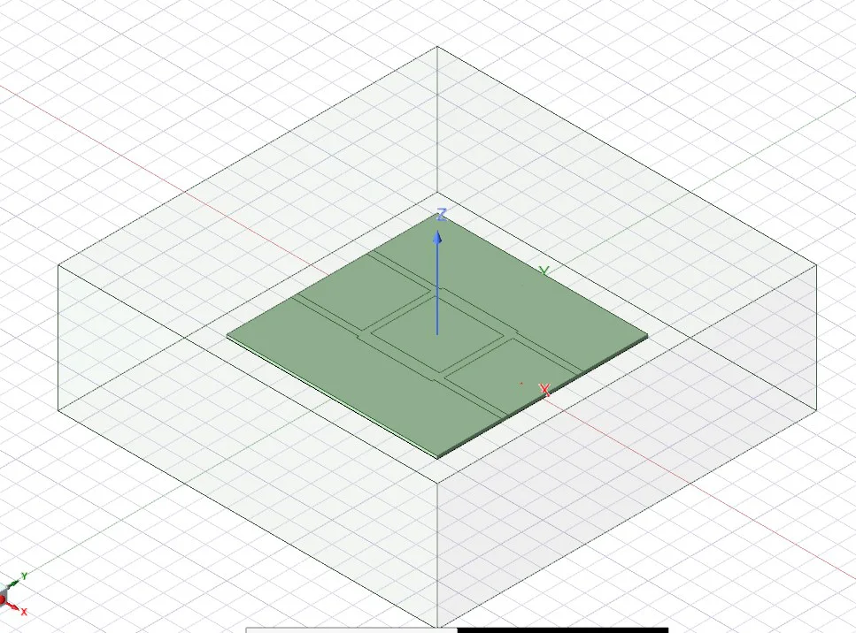
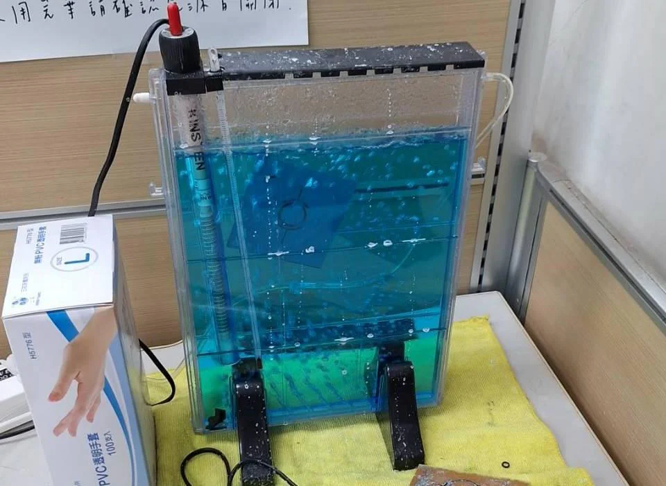
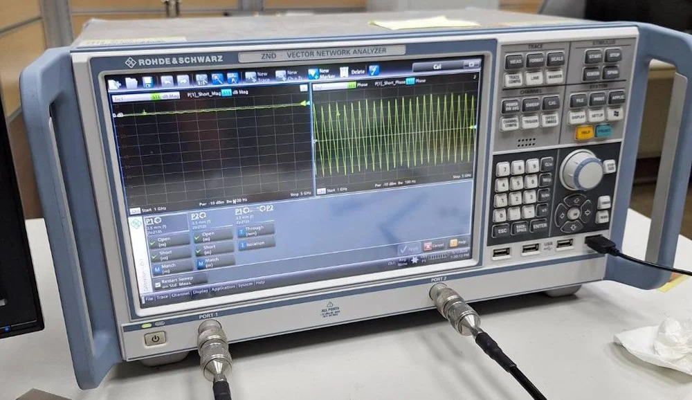
主要作品：Wilkinson 功率分配器
- 操作頻率
- 2.4 GHz
- 基板
- FR4，0.8 mm
- 板子尺寸
- 30 × 40 mm
- 工具
- HFSS、VNA
把 2.4 GHz 訊號平均分成兩路，並讓兩個輸出埠彼此隔離。兩條 70.7 Ω 的四分之一波長轉換線做成環形，輸出端跨接 100 Ω 隔離電阻，吸收奇模狀態下的反射能量。
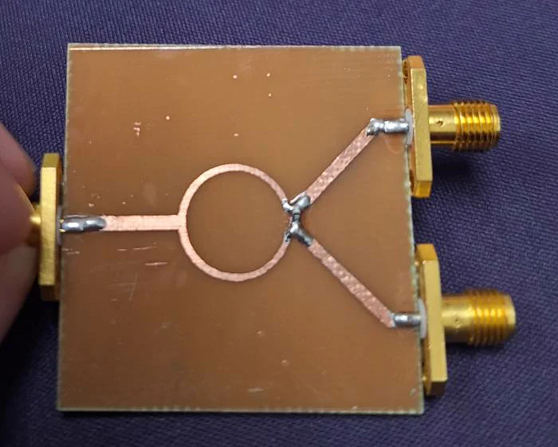
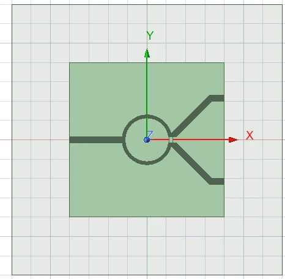
設計參數
| 項目 | 數值 |
|---|---|
| 50 Ω 微帶線寬度 | 1.53 mm |
| 四分之一波長轉換線寬度（約 70 Ω） | 0.8 mm |
| 四分之一波長轉換線長度 | 19 mm |
| 隔離電阻銲接缺口 | 1.5 mm |
第一版（22 × 40 mm）印出來後發現兩個輸出埠距離太近，SMA 接頭裝不下，所以第二版把兩條輸出線往上下拉開，板寬加到 30 mm，再重新模擬調整轉換線長度。
規格、模擬與實測
| 項目（2.4 GHz） | 規格 | 模擬 | 實測 | 結果 |
|---|---|---|---|---|
| 輸入回波損耗 S11 | > 10 dB | 29.6 dB | 18.2 dB | 符合 |
| 隔離度 S23 | > 20 dB | 31.4 dB | 27.5 dB | 符合 |
| 功率不平衡（S21 與 S31 差） | ≤ 0.5 dB | 0.1 dB | 0.02 dB | 符合 |
| 相位不平衡 | ≤ 5° | 約 0° | 4.11° | 符合 |
實測 S21／S31 為 −3.49 dB／−3.47 dB。
量測圖

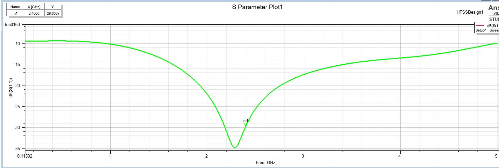

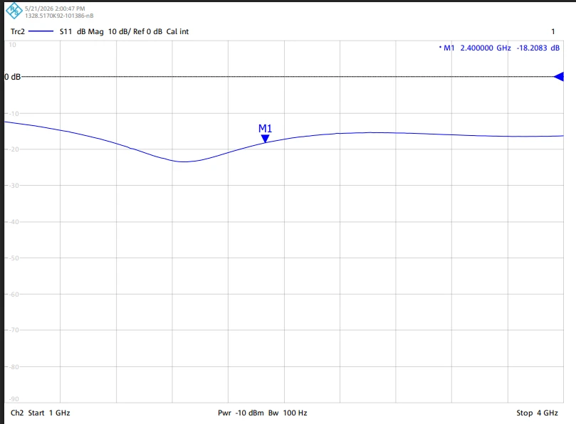

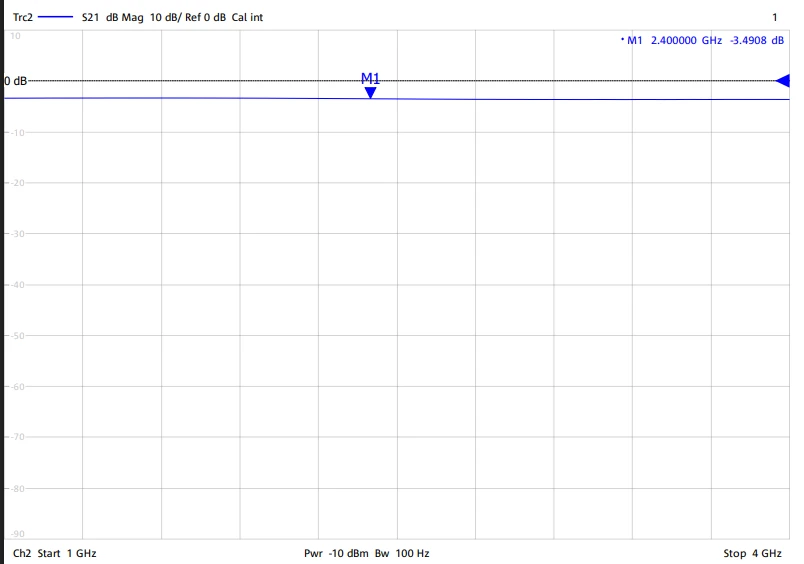

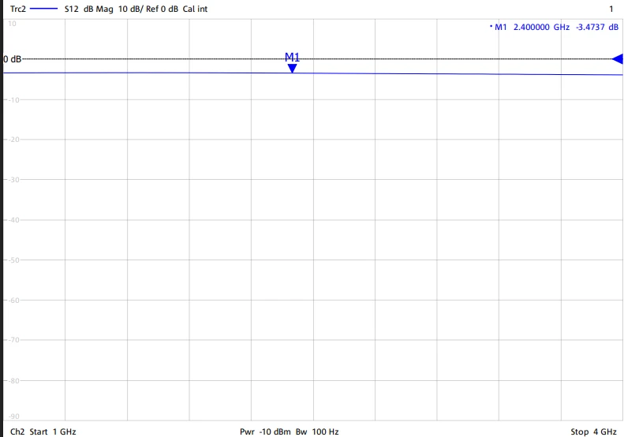

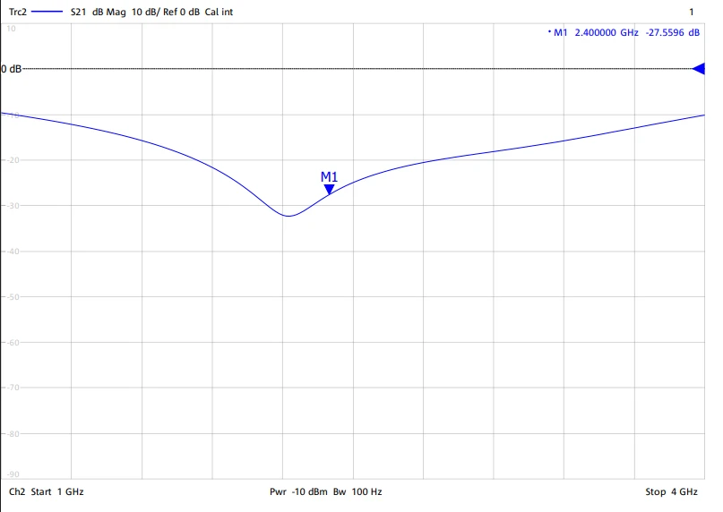

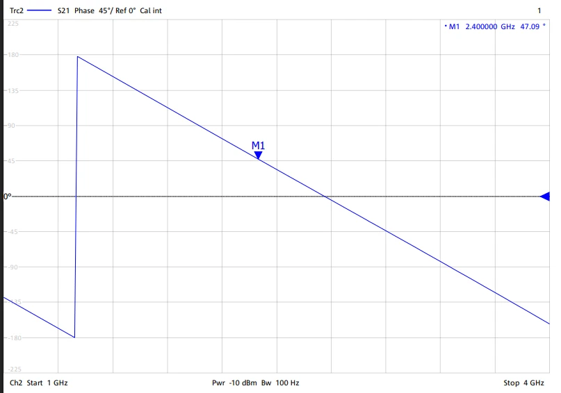
模擬與實測的差異
- S11 從 29.6 dB 降到 18.2 dB：模擬沒有包含 SMA 接頭到微帶線的轉接與銲點的寄生電感，訊號從同軸線進到微帶線時會產生阻抗不連續與反射。
- 隔離度少了約 3.8 dB：手工銲接的隔離電阻本身帶有寄生電容與封裝電感。
- 匹配最好的頻率往下偏：模擬時 S11 最低點在 2.3 GHz 多，實測約在 2.1 GHz 多。推測是模擬用理想的介電常數，實際 FR4 在 2.4 GHz 的介電常數可能浮動到 4.5～4.7；下一版可以用量到的頻偏回推實際介電常數，再修正轉換線長度。
其他微波電路
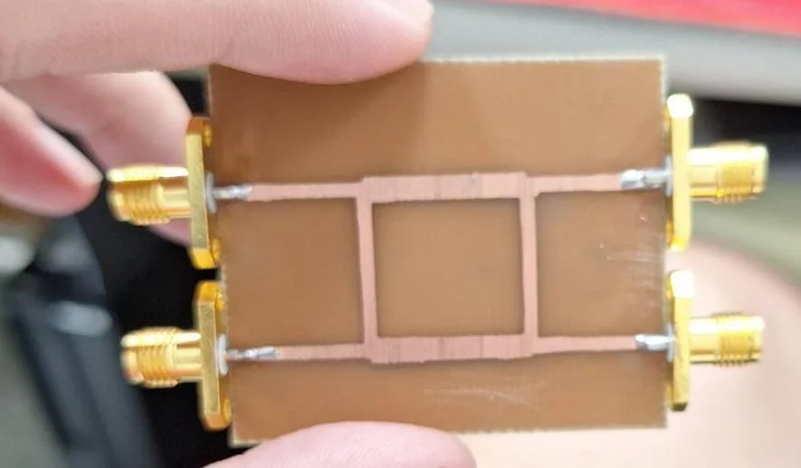
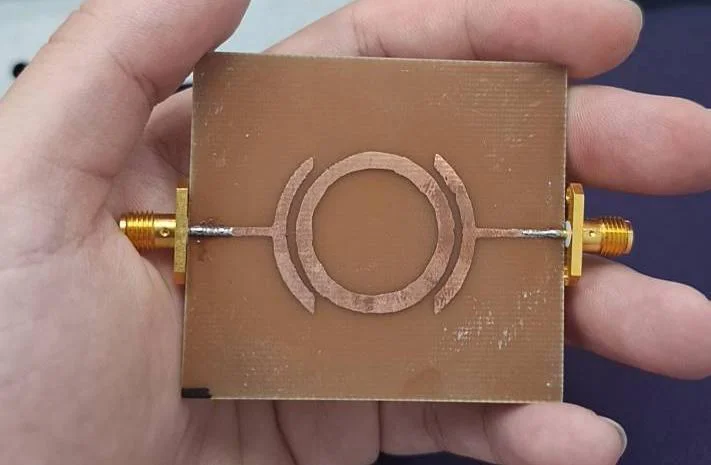
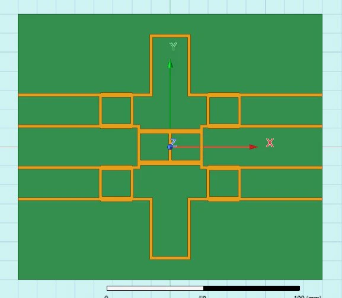